Diwa ng Tarlac
From the province's top destinations to sites off the beaten path — unlock every corner of Tarlac.
From the province's top destinations to sites off the beaten path — unlock every corner of Tarlac.
Diwa ng Tarlac
NG
Open: Monday to Friday
8:00 am to 5:00 pm
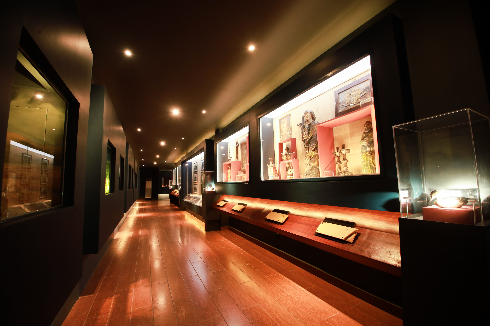
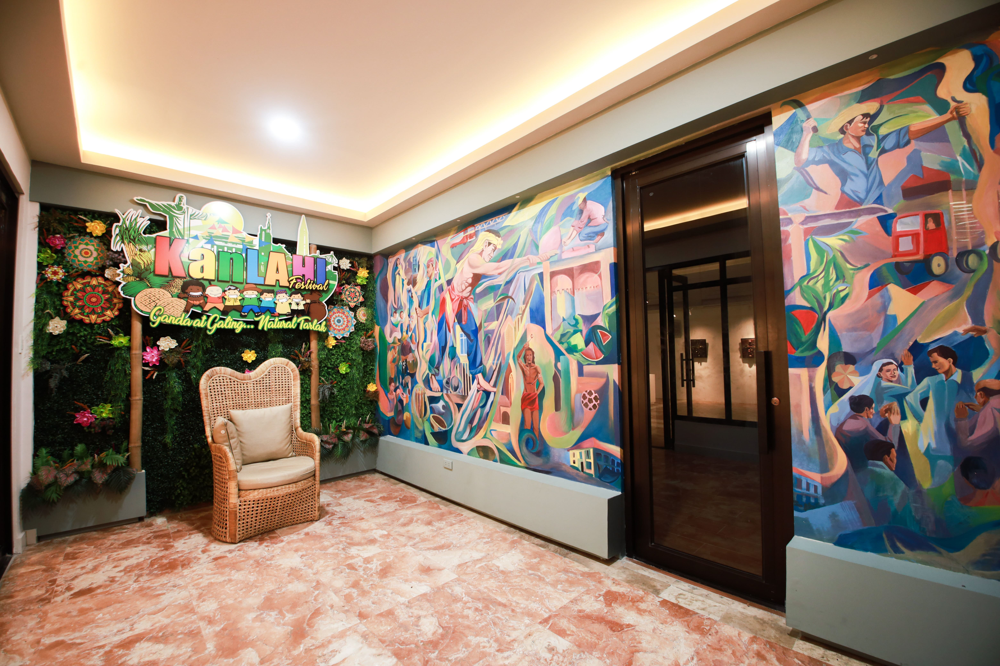
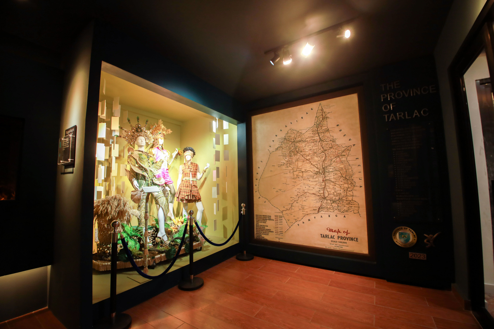
01 — The History and Cultures of Tarlac
An old Spanish-Tagalog dictionary by Pedro Serrano Laktaw in the late 1800s referred to 'Tarlac', as native sugar cane.
Early documents referred the place as a marshland rather than a plant, which is more feasible as it had its application in other parts of the Philippnes.
The first step towards the erection of Tarlac into a province was made in 1858, with the creation of the Comandanica Politico-Militar de Tarlac. Based on the actual law, when the Comandancia de Armas de Tarlac (another term for Comandanica Politico-Militar de Tarlac)
was conceived in 1857, with the appointment of Capt. Sebastian Hernandez as the first Comandante and the Royal Decree that credited it on 30 August 1858, it was already the formation of the territory that compromised almost in its entirely what was then and still now the Tarlac Province.
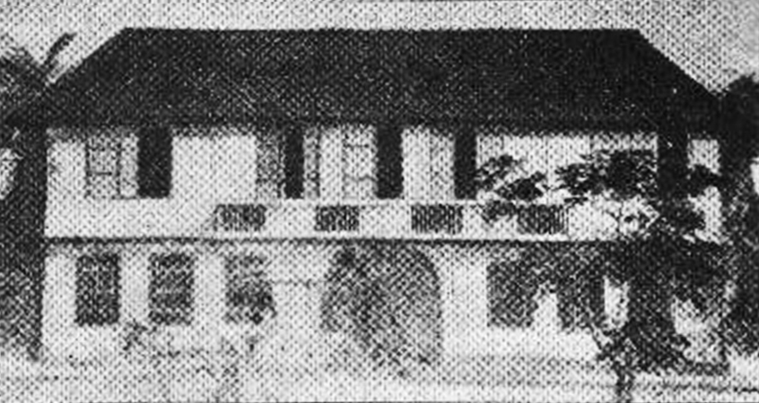
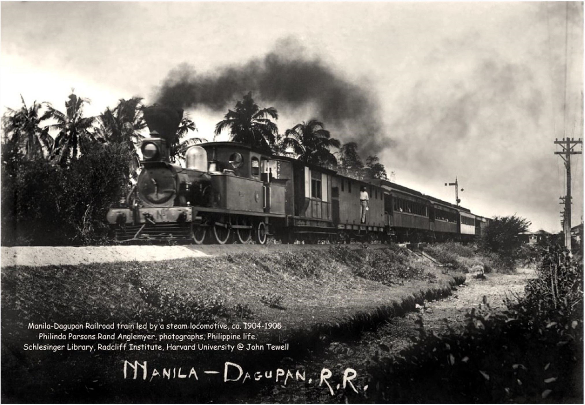
The Manila-Dagupan railroad further sustained the province as a transportation hub in Luzon.
The Gobierno Civil de Tarlac was created, with Don Antoniop Rodriguez Batista serving as the first civil governor.
Tarlac was included among the eight revolting provinces by Governor-General Ramon Blanco, immortalized as among the eight rays of the sun in the Philippine flag.
Eight Philippine provinces that initiated the revolution against the Spanish regime in 1896 including Manila, Cavite, Bulacan, Pampanga, Nueva Ecija, Tarlac, Laguna, and Batangas.
The so-called 'First Cry of Tarlac' initiated by General Francisco S. Macabulos in La Paz.On the morning of January 24, 1897, Macabulos found the perfect opportunity.
Macabulos along with his men charged at the Cuartel of the Spanish civil guards and soldiers in La Paz, Tarlac, armed with primitive knives and spears along with few guns. The revolutionaries triumphed and raided the Cuartel
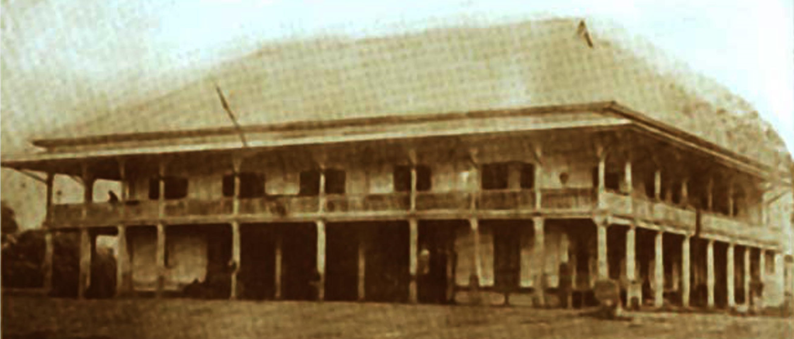
General Francisco M. Macabulos install the central Comite Directivo del Centro y Neorte de Luzon, With headquarters at Lomboy, La Paz Tarlac; with its own constitution, the so-called 'Macabulos Constitution'.
President Emilio Aguinaldo transferred his capital at Bamban, Tarlac, assuming the position of Captain-General. By June 21, he relocated at the Tarlac cabecera.
The Congress of the First Philippine Republic was reconvened at the Tarlac Cathedral with Ambrosio Rianzares Bautista as the President.
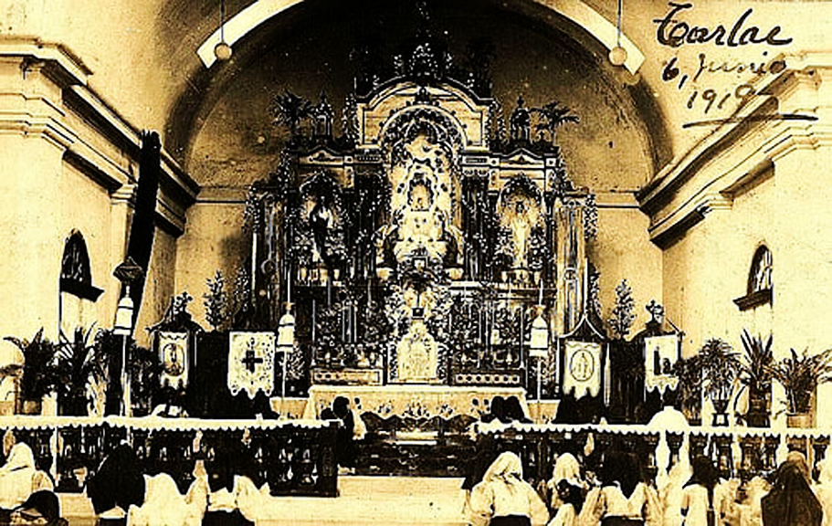
The Unibersidad Literaria de Filipinas was reopen in Tarlac, with Dr. Ma Leon Guerrero as its rector. on September 29, 1899, it held its first and only graduation ceremony.
Msgr. Gregorio Aglipay convened the so called Paniqui Assembly, marking the seed of what would become the Philippine Independent Church.
The American-sponsored civil government in Tarlac was inaugurated with Capt. Wallis O. Clark as its first governor.
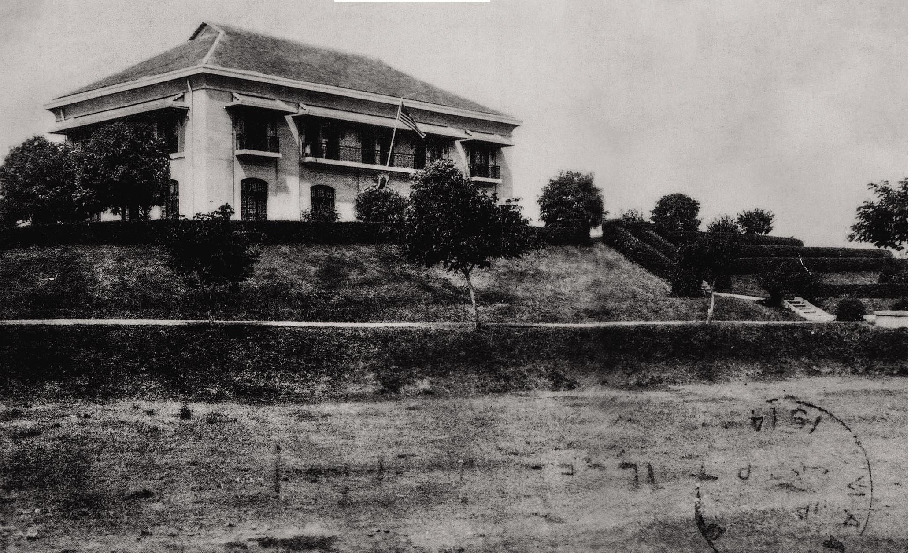
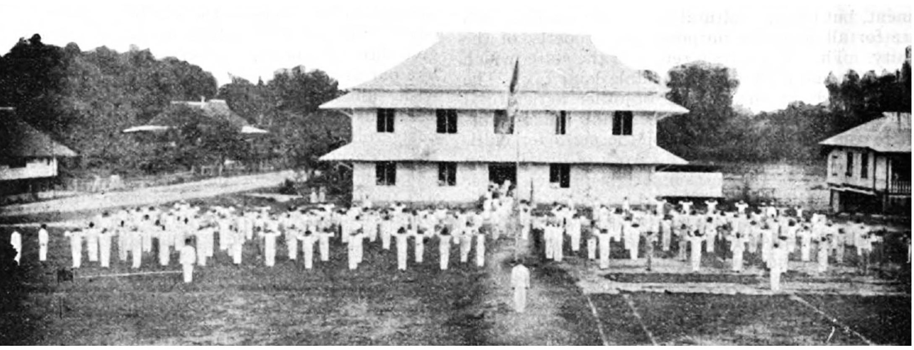
Tarlac is one of the first provinces in the country to erect its own public high school building, the Tarlac High School.
La Jota Moncadenia is a cultural dance originating from the town of Moncada.
The first folk dance team in the country to perform the dance is attributed to Ms. Felicidad Morales and the Moncada Central School back in 1938.
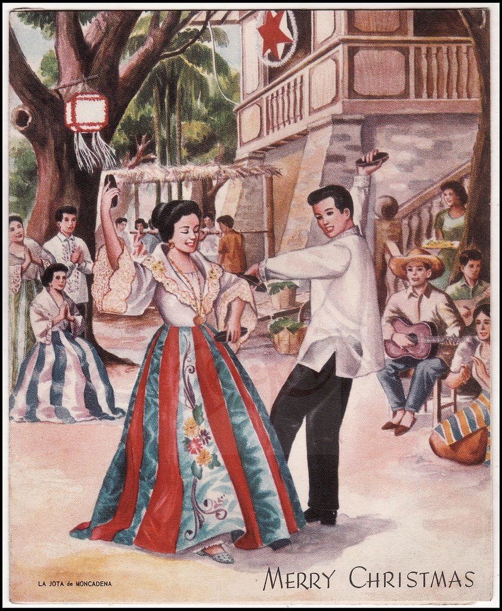
Tarlac also figured prominently during the Second World War. Mere mention of Capas O'Donell evokes memories of World War II, The Fall of Bataan, and the Death March where tens of thousands of tired, starved, and sick prisoners of war were made to walk through rough and dusty roads under the sweltering heat of the sun.
Tarlac was liberated from the Japanese on the feast of St. Sebastian
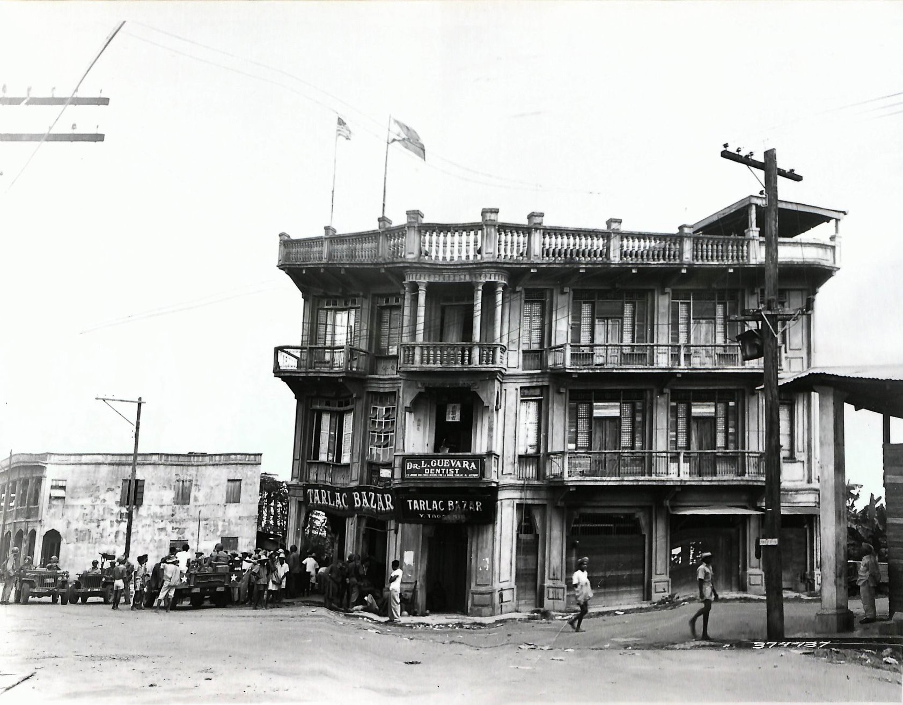
Tarlac Indigenous, Maria Cristina Galang won in the Philippines International Fair as Miss Philippines in 1953. The Maria Cristina Park in front of the Capitol Building was named after the first tarlaquena beauty queen.
The Diwa ng Tarlac was constructed by the administration of then Governor Homobono Sawit, which was set as the civic center of the province.
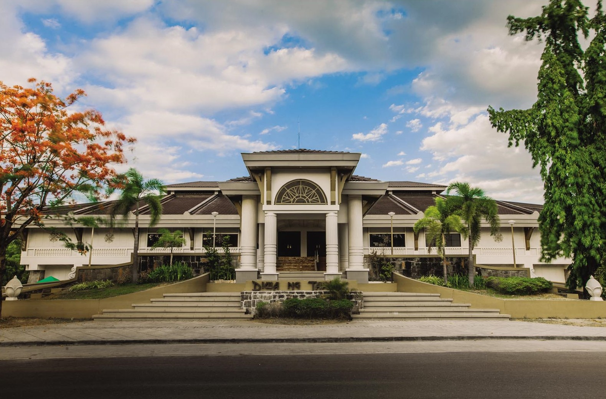
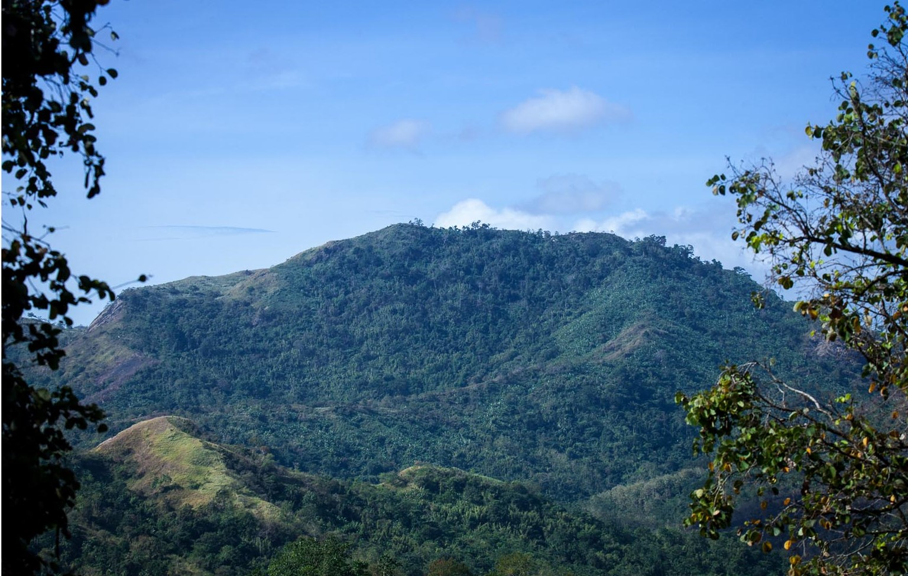
Creation of the Municipality of San Jose in Western Tarlac.
Mt. Pinatubo explosion where more than 800 people died mostly from collapsing roofs. And more than two million people whose houses and livelihood were either damaged and/or destroyed.
The eruption has also caused massive damage to natural resources, public sectors, public infrastructures, and agriculture.
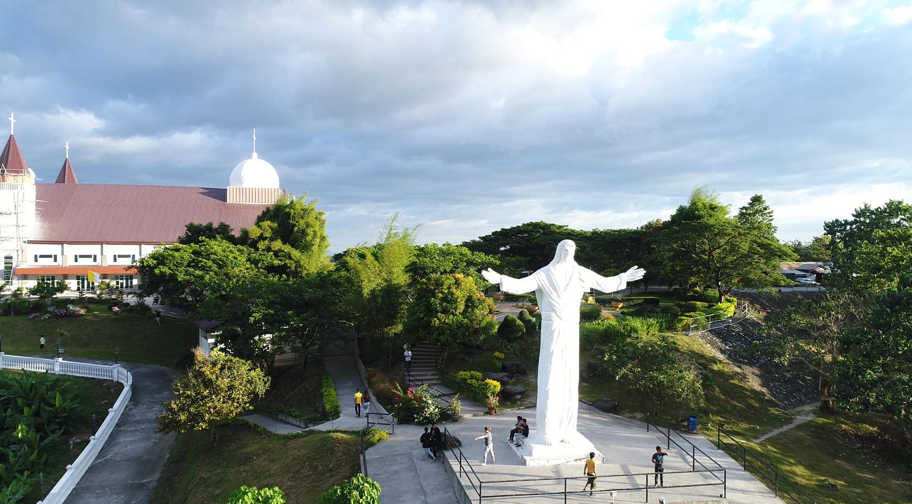
Then Governor Jose "Aping" Yap, through former President Gloria Macapagal Arroyo issued Proclamation 602 "Declaring as Eco-Tourism Park and Campsite a 278 hectare land in Brgy. Tubigan and Moriones in the town of San Jose. The Eco-Tourism is known for the famous Monasterio De Tarlac.
The province of Tarlac Hosted its First Palarong Pambansa at the newly Constructed Tarlac Recreation Park, now known as the Jose V. Yap Sports and Recreational Complex under the administration of the Governor Victor Yap.


The province of Tarlac hosted its first Southeast Asian Games at the New Clark City Sports Complex in Capas, Tarlac.
02 — Explore the Diorama
Tarlac as the first and last refuge of indigenous cultural communities / at the dawn of colonial contract.

03 — Unlock Tarlac
Paramotoring, ATV lahar trails, kayaking, hiking & mountain biking around Mt. Pinatubo and Monasterio de Tarlac.
Farm tourism, recreational parks and green spaces built around the province's agricultural heritage.
From La Jota Moncadenia to town fiestas — the cultural calendar that defines Tarlaqueño identity.
Tarlac's kitchen table — regional dishes shaped by sugarcane fields and generations of local cooking.
Monasterio de Tarlac and other sites of quiet reflection, overlooking the province from its hillsides.
From Luisita Central Park Hotel to boutique aparthotels in San Sebastian — stays for every traveler.